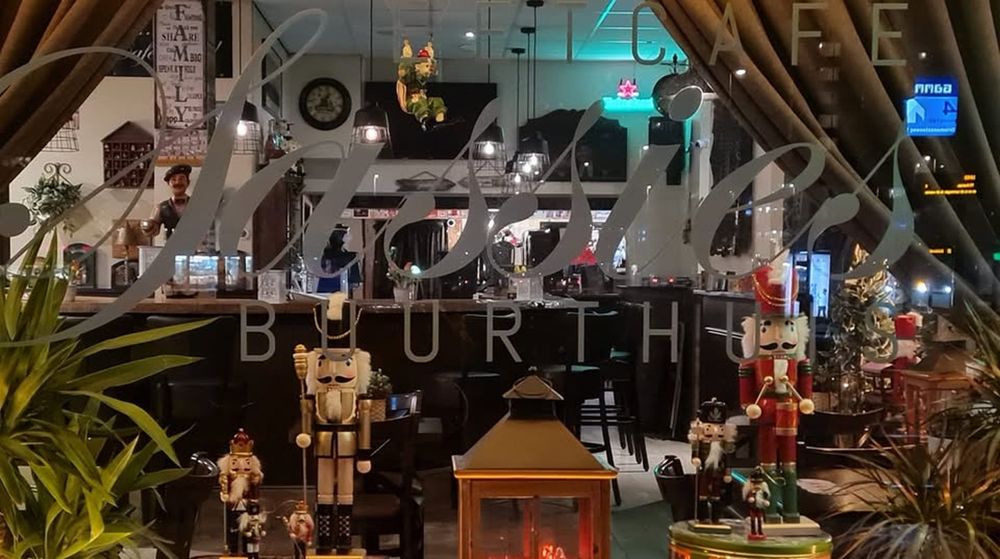
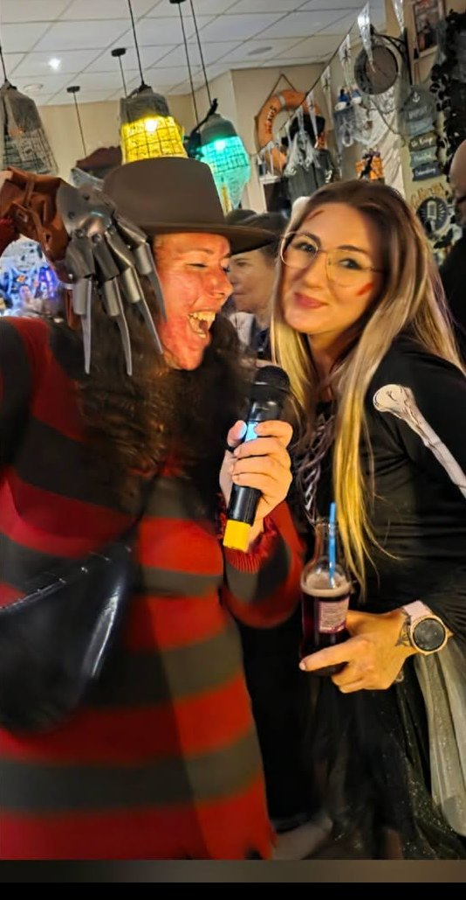
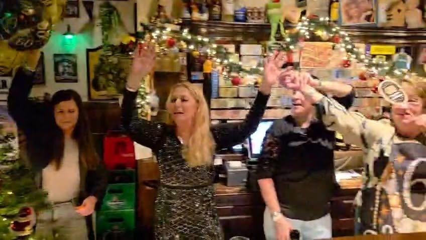
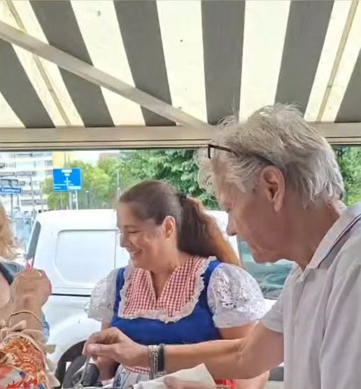
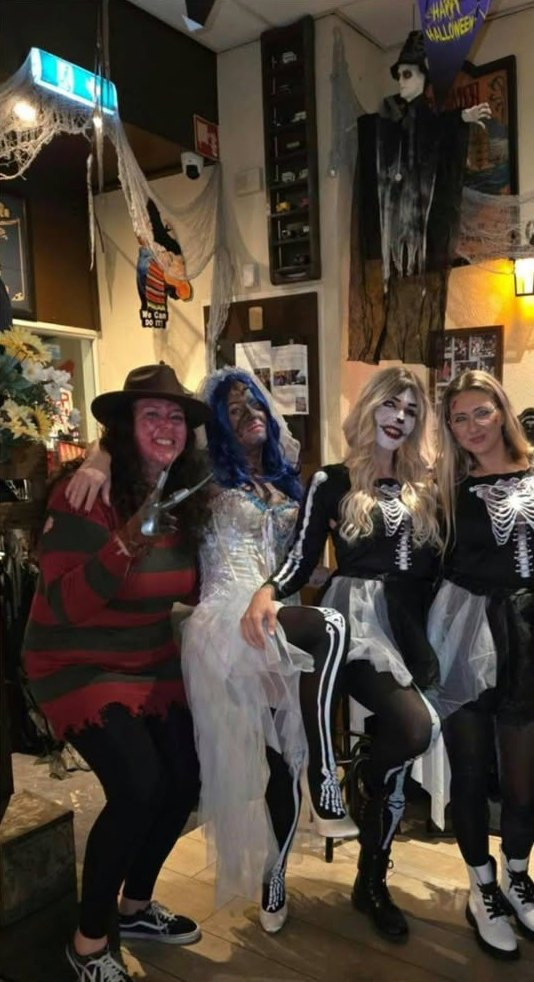
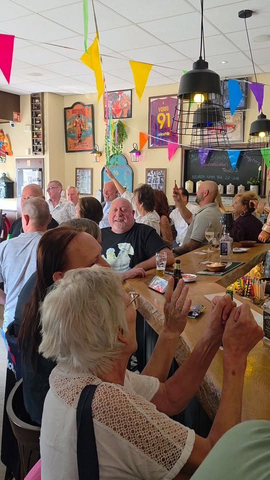

Gezellig en toegankelijk voor jong en oud
Het eetcafé en buurthuis aan de Slinge in Charlois. Voor een borrel, een lunch of high tea, en er is regelmatig iets te beleven.
Bij Sas kun je terecht voor
Borrelen
Een drankje aan de bar of buiten op het terras.
Lunchen & menu's
Lunch en diverse menu's, vanaf 11:00 uur.
High tea
Onze heerlijke high tea, gezellig met z'n allen.
Feestjes
Verjaardag, jubileum of een afscheidsborrel: vier het bij ons.
Altijd wat te beleven
Bij Sas zit je nooit stil. Op zaterdag is er vaak een feest, en er komen regelmatig artiesten langs.
- Live muziek & karaokeZangers als Perry van Zuid en Bonne Bauer, en karaoke-avonden.
- BingoRegelmatig een bingo-avond in het café.
- Voetbal op groot schermFeyenoord live, samen met de buurt.
- ThemafeestenHalloween, het Haringfeest en de zaterdagfeesten.




Wat onze gasten zeggen
Raadt Café Sas aan“beste cafe van rotterdam !!!!!!”
Raadt Café Sas aan“Gister ff een drankje gedaan (chocomel belays). Super gezellig! Toffe mensen die mijn rolstoel naar binnen wilde tillen, toch maar buiten gebleven. Wel super bedankt voor het aanbod mannen!”
Raadt Café Sas aan“heerlijke prakjesdagen top voor 5.50”
88% raadt ons aan op Facebook (47 beoordelingen)

Het café van de buurt
Café Sas is eetcafé en buurthuis tegelijk. Hier komen buurtbewoners, vaste gasten en nieuwe gezichten samen, van jong tot oud.
Kom gezellig borrelen, lunchen of een feestje vieren. Bij ons word je vriendelijk ontvangen en schuif je zo aan.
Reserveren
Een tafel, high tea of een feestje? Stuur ons even een bericht, het makkelijkst via WhatsApp.
Café Sas
- Maandag t/m donderdag11:00 – 00:00
- Vrijdag en zaterdag11:00 – 02:00
- Zondag12:00 – 22:00